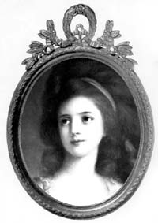
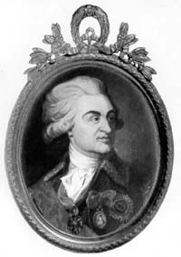

|
Приближается 200-летие со дня рождения гения мировой культуры А.С.Пушкина и 210-летие Николаева. Но мало кто знает, что эти два события в истории нашего края связаны с историей любви основателя Николаева Г.А.Потемкина и крестного отца нашего города А.С.Пушкина к двум женщинам с одинаковым именем - Софья Потоцкая - к матери и ее дочери, характеры и судьбы которых настолько сильно отличались, насколько они были близки друг к другу в родстве. Об истории любви к этим двум замечательным женщинам мой рассказ.
Две истории о любви.
Основание г.Николаева и любовь Потемкина.   Нравится нам или нет, но судьба каждого города каким-то странным образом является продолжением характеров и судеб их основателей. Не буду говорить "за Одессу", основателем которой был испанец Дерибас, скажу о нашем городе. Современники Пушкина оставили нам свои воспоминания о том, что Николаев своим рождением обязан любви Потемкина к Софье Потоцкой (тогда - Софье Витт). Вот, например, что писал в 1818 году Н.Левицкий в "Украинском вестнике" после посещения нашего города: "Знаете ли вы историю Николаева? "Он построен по повелению Князя Потемкина", - скажете вы, и вы ошиблись. Гр.В*(Витт - А.З.) причиною тому, что родился и возрос, возрос и распустился сей цветок среди одичалой природы. Женщина прелестная с прекраснейшей еще душою, с чувствительным сердцем, с тонким умом, словом, женщина-Гений умела привлечь сердце Гения-героя. Одно ея слово, и на диких берегах Ингула явился город, на месте бедных рыбачьих хижин огромные палаты Спасск и Богоявленск (ныне Яхт-клуб и Корабельный район - А.З.); одно ея слово, и волшебная рука искусства одела нагия скалы и песчаные холмы скромными рощицами и великолепными садами, бережно провела светлые источники; они резвились, прыгали и, дробясь по камешкам, журчанием своим одушевляли мертвую пустыню." Кем же была Софья Константиновна Потоцкая? Сразу скажу, что документальных сведений о ее происхождении не сохранилось и существует три версии о том, как она оказалась в России. Но все они сходятся на том, что ее, 12-летнюю девочку, купил в Константинополе в 1778 году у ее матери польский или французский посол и что она жила там в предместье Фанаре, почему ее и называли прекрасной фанариоткой. Так назывались потомки знатных греческих фамилий, избежавших расправы при завоевании турками Константинополя. Но польский посол (мне кажется это более правдоподобным) не довез ее до Польши. По дороге сын Каменец-Подольского коменданта майор Иосиф Витт перекупил Софью де Челиче, Глявоне или Маврокордато, так она сама называла себя, за 1000 червонцев и женился на ней. В 1779 году они уехали в Париж. Говорят, что несколько лет прекрасная фанариотка, обладавшая природным умом, блистала там на балах и многим вскружила голову, в том числе и королю. В 1785 году умирает отец Витта, и сыну пришлось возвратиться в Польшу занять пост отца, и тут Софья Витт покорила уже весь польский свет. Весть о небывалой красоте и уме Софьи Витт дошла до Потемкина, и тот пригласил Иосифа Витта к себе на службу. Вскоре он доставил Витту генеральский чин, графский титул Российской империи и назначил его комендантом Херсона, взамен исключительного права иметь повсеместной спутницей его жену. При посещении Крыма Екатериной II Потемкин щеголял Софьей, как самым большим своим завоеванием. В его архиве сохранились письма, в которых он после взятия Очакова на день Святого Николая (зимнего) заказывал роскошные платья для нее. В "Записках Александра Михайловича Тургенева" сообщается, что во время осады Очакова, "когда войско умирало от холода, голода и житья в землянках, князь Потемкин в главной квартире своей, в лагере, давал балы, пиры, жег фейерверки.., куртизанил с... бывшею прачкою в Константинополе, потом польской службы генерала графа Витта женою, потом купленною у Витта в жены себе графом Потоцким и, наконец, видевшей у ног своих обожателями министров и королей; будучи уже в преклонных летах, графиня София Потоцкая была предметом внимания даже Александра Павловича". Удалось найти мне в архивах и подробные записки Василия Степановича Попова, правителя канцелярии и доверенного лица Потемкина, который писал: "Он имел у себя полную капель музыки, выписывал танцевальщиков из Франции, имел собственный театр, который переезжал за ним во все места, содержал за дорогую цену виртуозов разного рода, певиц, плясунов, плутов, забавных дураков и даже хор раскольников, кои распевали старинное столповое пение, когда ему было угодно... Потемкин знал несколько языков, любил литературу: он и пред стенами Очакова перевел один том церковной истории Аббата Фиери и написал несколько шутливых стихотворений." Потемкин очень хорошо понимал роль личности в истории и распекал строителя Николаева М.Л.Фалеева за неисполнение его поручений в отношении солдат, говоря, что всё равно его неисполнение припишут в будущем Потемкину. Попов пишет, что князь, по натуре будучи противоречивым человеком, "...обещания свои выполнял, никогда ничего не забывал. Он читал много даже во время военных действий, обращаясь с самыми искусными людьми во всех науках и художествах, и никто лучше его не имел знаний. Он удивлял собою императора, художника, богослова. Он имел множество добродетелей и не меньше пороков." От себя добавлю, что он был бездарным полководцем, но зато одел армию в самую удобную форму, и когда он не вмешивался в дела А.В.Суворова, то победы одерживались достаточно быстро. Потемкин действительно хотел сделать Николаев столицей всего Новороссийского края, в одном из архивов я нашел проект карты с новым переименованием, датированной 1791 годом. Он пригласил сюда лучших мастеров для строительства и украшения нашего города, и это тоже было данью любви к Софье Потоцкой. Вот что писала французская портретистка Виже-Лебрен, посетившая лагерь Потемкина: "Ему всё было нипочем, лишь бы удовлетворить желанию, капризу обожаемой им женщины. Влюбленный в госпожу де Витт, он расточал перед нею самые изысканные любезности. Так, однажды, желая подарить ей кашемировую шаль безумно высокой цены, он дал праздник, на котором было до двухсот дам, а после обеда устроил лотерею, но так, что каждой досталось по шали, а лучшая из шалей выпала на долю самой прекрасной из дам." Но планам Потемкина не суждено было сбыться. К 1790 году обострились отношения между ним и Екатериной II, которую всё больше и больше волновало то, что у Потемкина сосредоточилось слишком много власти. Он становился всё более неуправляемым. Князь практически оставил ее как любовник, и ей пришлось искать нового фаворита (им стал П.А.Зубов). Имея кличку запорожских казаков Грицько Нечеса, отказался разгонять Запорожскую Сечь, и ей пришлось давать команду генералу Теккелею. Часть запорожцев, которая не ушла за Дунай, он принял на службу и дал им лучшие земли между Днестром и Южным Бугом. Правда, после его смерти императрица "исправила его деяния" и отослала всех казаков на Кубань и Тамань. Ее пугал грандиозный "греческий проект" Потемкина по восстановлению на территории низложенной Турции византийского царства с императором из дома Романовых и возможного возвращения Софьи Витт на родину. Для этого Потемкин начал строить 300 малых судов в Николаеве и Херсоне. С большим трудом императрице удалось "уговорить" Потемкина заключить мир с турками. Кроме того, она была уже стара и боялась за судьбу престола, в случае, если бы Потемкин ее пережил. В архиве мне удалось найти свидетельство одного из придворных о том, что Екатерина II дала указания молодому доктору, которого только что выучила в Европе и которого она направила к князю, отравить его, что, возможно, и было выполнено 5 октября 1791 года. Императрица пережила Потемкина всего лишь на 5 лет. Как же дальше сложилась судьба Софьи Витт? Выполняя тайные поручения Потемкина и Екатерины II, она ездила на сейм в Варшаву в 1788 году и убедила магната и коронного гетьмана, графа Феликса-Станислава Потоцкого примкнуть к Тарговицкой конфедерации, после чего последовало восстание Костюшко - и Потоцкий оставил родину. От любви к ней Потоцкий потерял не только родину, но и голову. Его можно понять, глядя на пастельный портрет Софьи Потоцкой работы итальянского мастера Сальваторе Тончи 1796 года. После многолетнего торга Потоцкий выкупил её за два миллиона польских злотых у Витта, но до смерти своей жены Жозефины-Амалии Мнишек-Потоцкой, известной художницы итальянской школы, в 1798 году он так и не мог с ней обвенчаться. Поселившись в Умани, он создал для неё роскошный парк, названный Софиевским, который и сегодня радует его посетителей. Но подруга жизни оказалась ему неверна, связалась с пасынком Юрием Потоцким, он застал их в любовных утехах, не смог этого перенести. В 1805 году старый граф умер, не попрощавшись с женой. Вакханалия продолжалась ещё четыре года, пока пасынок не проиграл почти всё своё состояние, и впервые неотразимая красавица оказалась брошенной. Она рассталась с Юрием, обеспечив ему роскошное существование в Париже, где он вскоре и скончался. "Баядерка от рождения", она под старость становится добродетельной "матроной", старается забыть прежнюю жизнь, сохраняя преданную память только к Потёмкину, которого до конца "жалела, как родного брата". И было отчего, именно Потёмкин подарил ей большое греческое селение Масандру, имения в Симеизе, Мисхоре и дачу вблизи Симферополя. С 1810 года Софья Потоцкая "нравственно хорошеет", занимаясь искуплением грехов и воспитанием детей. |
|
Анатолий Золотухин, председатель Пушкинского клуба. |